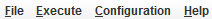
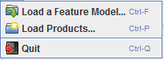
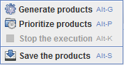
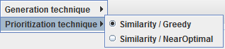
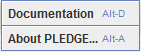
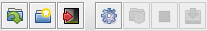
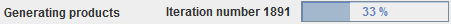

PLEDGE - A Product Line EDitor and tests GEneration tool
| It contains 4 items : |  |
The File item allows:
|
 |
The Execute item allows:
|
 |
The Configuration item allows:
|
 |
The Help item allows:
|
 |
| It contains 7 buttons which correspond to shortcuts to the main functionalities of the tool: |  |
| Localized at the bottom of the main window, it allows visualizing the current action performed by the tool. |  |
Loading a Feature Model and Generating Products
The upper part contains information related to the Feature Model, like the number of features, the number of constraints, ... the left part contains the list of constraints of the feature model, and the right part the constraints of the model. When requesting to generate products, the following window appears:
This configuration window contains the parameters to set for the products' generation: the number of products desired and the amount of time in seconds allowed for generating them. After validating the generation process and the generation over, the products appear in the bottom of the window. it contains, for each product, the features selected.
The format used by PLEDGE to represent products is the following. The first lines of the products file contain the features index (starting at 1) and its name with an arrow between them ("->").
The other lines represent the products (one line per products). For each product, its corresponding line contains the features indices separated by a semicolon, where a positive index represent a selected feature and a negative index an unselected feature. The order of the products indices is not important
The following example contains three features and two products. The first product selects only the call feature while the second products selects all the features.
1->call
2->gps
3->bluetooth
1;-2;-3;
1;2;3;
Loading Products and Prioritizing them
It contains the list of products and for each of them the features selected. After launching the prioritization, the list of products is updated.